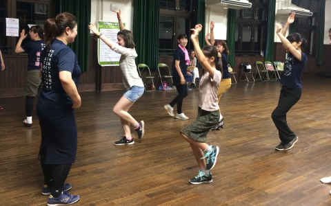

体験レビュー
徳島の夏のお祭り阿波踊りお祭り行ってきました。
日本人だけじゃなく外国の観光客も多くとても賑やかでした 初心者でも分かりやすい踊り教室があって毎日４会 ( 11;00~,14;00~,15;00~,16;00~)の時間に楽しく踊りを 学べるし踊りの解説も英語の字幕があってとても わかりやすかたんです。
エイサー体験
本場の伝統的なエイサーを市内の青年会メンバーから 指導を受け大太鼓、締め太鼓、 パーランクー、 手踊りなどグループで分かれて約１時間でエイサーを 学ぶことができました。地域の人々と交流ができて とてもいい体験でした。
青森の荒馬まつり
地域の子供たちと大人たちが一緒に荒馬を踊る姿はとても 楽しく見えていました、 大きなねぶたも楽しめるし 夜には花火もあって本当に楽しかったです。
アイヌ民族の歴史と踊り
アイヌコタンに初めて行きました。アイヌの人たちが 使っていた。楽器、ムックリや木彫り、アクセサリーなど お土産もたくさん有りましたが私の興味を引いたのは 昔からに歌や踊り披露してくれましたことです。 キレイな歌声と伝統の踊りに感動しました。